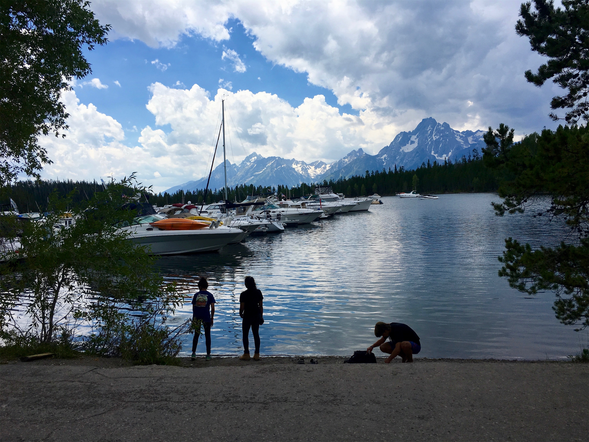

Tuesday, Jul 17, 2018, 12:43 PM MDT
Jackson Lake Lodge, Jackson, WY, United States
72°F Mostly Cloudy
72°F Mostly Cloudy
![]()
7/17 Canyon Lodge, WY -> Colter Bay Visitor Center, WY 78 mi, 2.5 hr
7/17 Colter Bay Visitor Center -> Jackson Lake Lodge, WY 6 mi, 1.5 hr
7/18 Jackson Lake Lodge, WY -> Teton Park Road (RT) 68 mi, 5.5 hr
Trip Total: 8,226 mi
Grand Teton National Park is just south of Yellowstone. Its main feature is the ever-present Teton mountain range, with Grand Teton the tallest at about 14,000 ft. It is fronted by lakes (Jackson Lake is the largest), followed by a huge valley called Jackson Hole. We stopped at the Colter Visitor Center and took a walk on the lakeshore. We then checked in at the historic 1955 Jackson Lake Lodge, our splurge accommodation on this trip. The relaxing guest area with the massive picture window and the counter-style diner were our favorite features, and they were a short walk from our cabin. We had a torrential downpour, and the cool air in the morning created a low cloud layer in the mountains.
On our full day, we started early to beat the crowds and drove the loop counter-clockwise through the valley, starting with a climb up Signal Mountain’s Summit Drive to see the vast valley to the east and the mountains to the west. The Jenny Lake Scenic Drive gave us our best mountain view. We stopped at the John Moulton Barn for the iconic photo. The next morning, we left the park headed south and stopped at the must-see National Museum of Wildlife Art, just outside the park, and continued to Wilson for lunch with Deb’s cousin Tanya, who works in environmental education in the park. We continued west through Teton Pass, on the way to Idaho.
